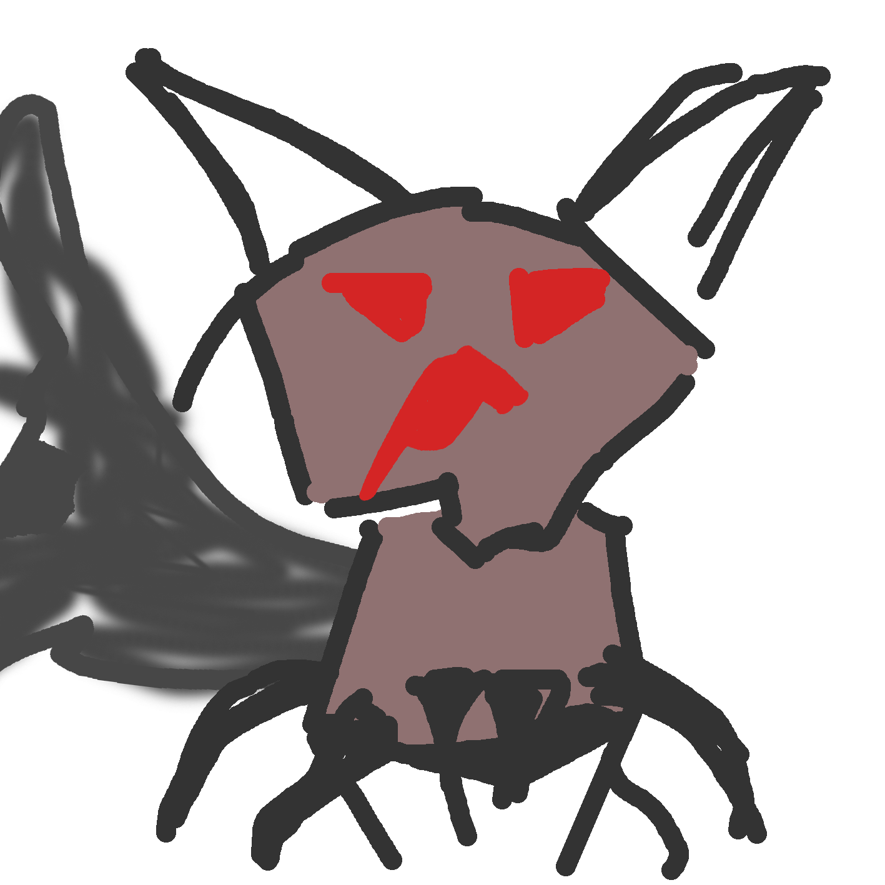

Bilden är en skärmbild tagen i unity-programmet. Det är programmet vi har använt för att skapa spelet.
Detta är den första och enda skissen av spelets fiende. Den har inget officiellt namn än. Vissa har sagt att den ser ut som en korsning mellan en räv, en skorpion och en ekorre.